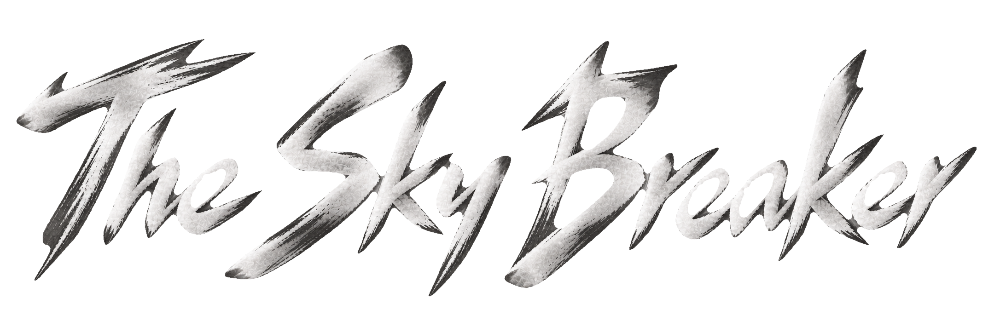
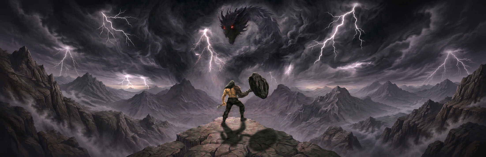

CHARACTER 01
GAME-004: Temporary content.
GAME-005: Temporary content.

THE SKY BREAKER
TRAILERGAME-003: Temporary content.
GAME-005: Temporary content.
GAME-007: Temporary content.
Inside the engine, gameplay architecture, boss AI and production workflow of The Sky Breaker.
The third-person action runtime is built with Unreal Engine 5.3.2. The Windows renderer is configured for DirectX 12 and Shader Model 6, with Lumen dynamic global illumination and reflections, plus Virtual Shadow Maps.
Core gameplay is implemented in C++, while Blueprints connect assets and tune parameters. Cheongryong separates decision-making, flight movement, combat and lightning into Actor Components. UPROPERTY and UFUNCTION expose editable values and callable interfaces; delegates report action stages and completion results.
Cheongryong's AIController runs an authored Behavior Tree and Blackboard. C++ Tasks, Decorators and Services coordinate attacks and patrols, synchronizing phase and flight state through Blackboard keys. Phase-dependent weights and independent cooldowns govern attack selection, with explicit handling for interruption and external control.
Cheongryong's elongated body uses an Animation Blueprint that routes a Local Reference Pose through three Trail Controllers. The body, tail and whiskers follow the head's movement, separating flight control from the skeleton's secondary motion.
Cheongryong's lightning samples the ground with a line trace and reuses the telegraphed impact coordinates for the strike. Collision volumes and damage handling are separate from presentation, with pending warnings and strikes cleaned up on interruption or death. Fire breath reuses the existing projectile collision and damage path.
The team uses Perforce to manage C++ source alongside Unreal assets such as Blueprints, maps and animations. Checkouts and changelists track changes, while personal workspaces and shared assets are kept distinct to reduce conflicts and accidental overwrites of binary assets.
Development Editor builds and Blueprint compilation form the baseline validation workflow. Cheongryong includes C++ Automation Tests for seeded action selection, action lifecycle and circular flight paths. Headless Editor checks and PIE/SIE sessions validate saved-asset loading and runtime behavior in separate steps.
FORTRESS-002: Temporary content.
FORTRESS-003: Temporary content.